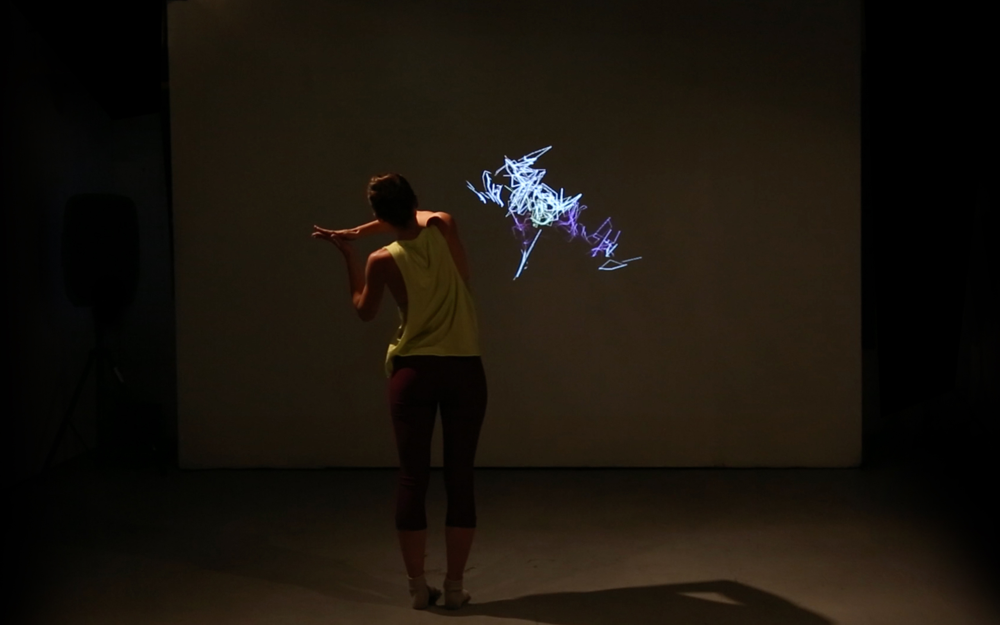

Torn
TORN on Vimeo.
Torn explores the relationship between a dancer and her digital presence. It is a five minute live performance involving a projected video, live 3D animations and a performer.
With increasing presence of digital media in society, less of our day to day communications occur in person. Rather than interacting with the world directly, we do it through representations of ourselves, enhancing some of our abilities while losing others.
The piece is about the competition that occurs between oneself and this projected presence, but also the desire for assimilation. Throughout the performance, the dancer’s computerized avatar oscillates between a near mirror image of reality and an unrecognizable distorted form as the two discover how to navigate, or overtake, their shared space.


Credits
Visual Design and Concept: Sergio Mora-Diaz and Kat Sullivan
Choreography and Performance: Caitlin Sikora
Tools used
3D Animation: Kinect Sensor, Canon 5D DSLR Camera and DepthKit RGBD Filmmaking Toolkit
Motion Tracking: Kinect Sensor
Data: Max/MSP/Jitter
Exhibitions
March 14, 2017
Fresh Cuts: Music, Games, and Tech
SXSW
Austin, Texas
August 19 – September 11, 2016
Artificial Retirement
Flux Factory
Queens, New York
April 15, 2015
Tisch Dance and New Media Festival
Tisch School of the Arts NYU
New York City, New York